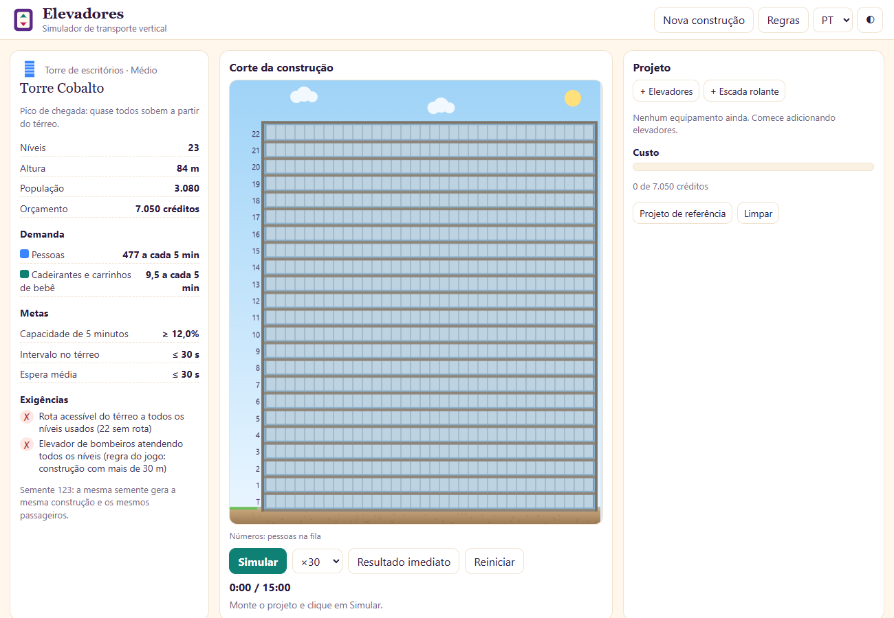
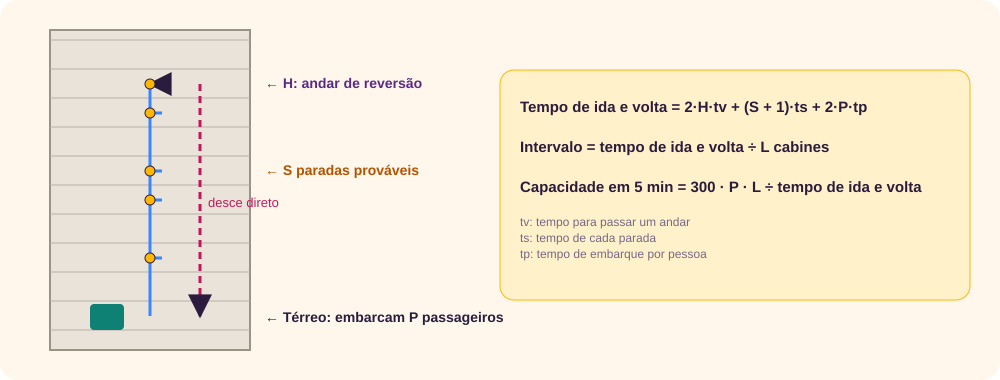
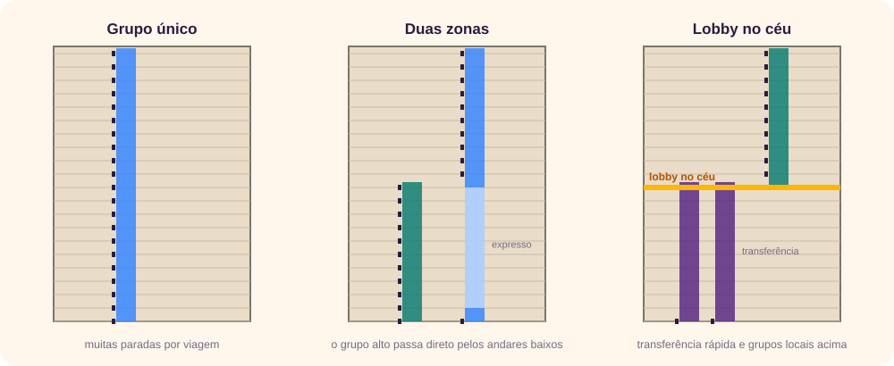
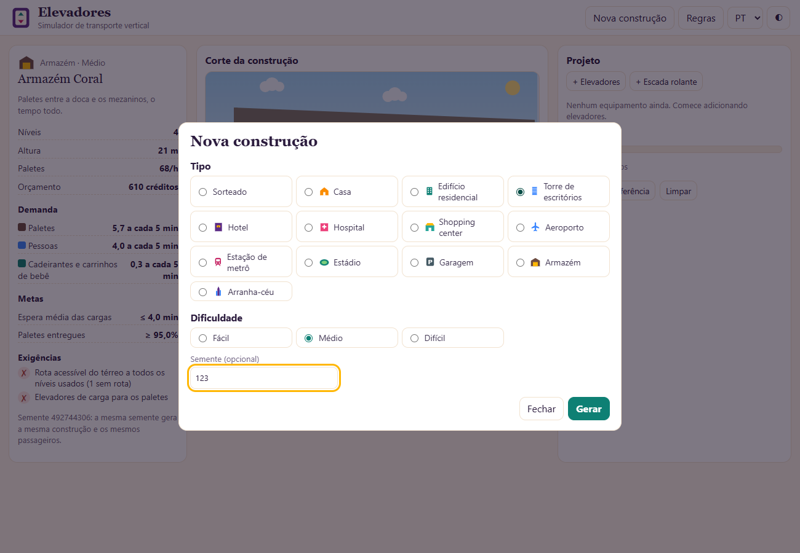
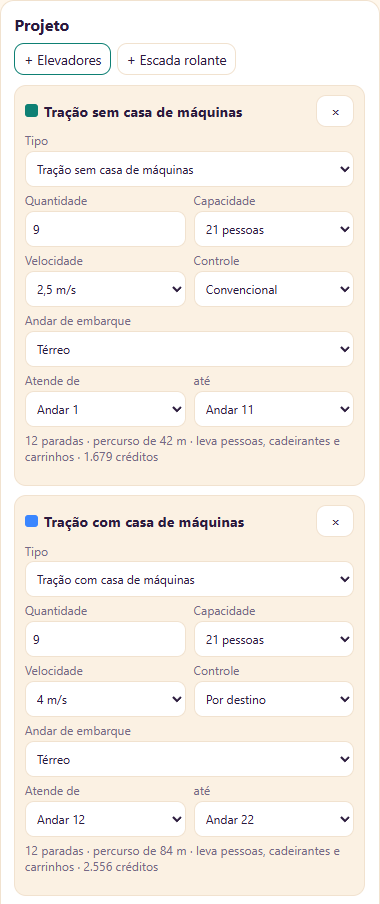
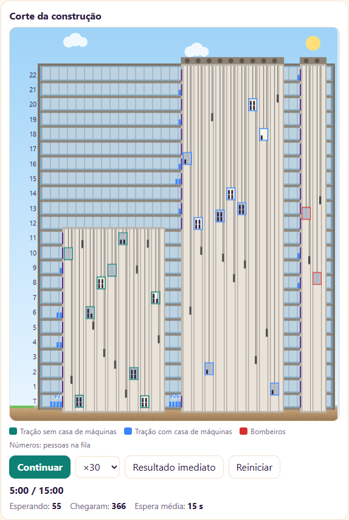
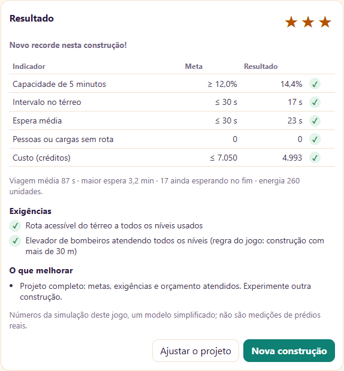
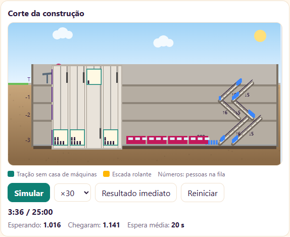
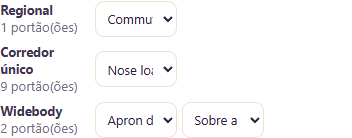

O jogo
Elevadores é um jogo de projeto. [1] A cada partida ele sorteia uma construção, de uma casa a um arranha-céu, um aeroporto ou um estádio, com uma necessidade: quantas pessoas, para onde vão, com que pressa e com que dinheiro. Você escolhe elevadores, escadas rolantes, esteiras e pontes de embarque. Depois, a simulação mostra o horário de pico em movimento, com cabines subindo e descendo e filas crescendo ou sumindo, e dá a nota.
O jogo é um único arquivo HTML, funciona sem internet e está em português, inglês, italiano e espanhol.

Uma breve história
O elevador seguro (1853–1857)
Elevadores de carga já existiam, mas o medo de o cabo arrebentar impedia que levassem pessoas. Elisha Otis criou um freio de segurança que trava a cabine nas guias se o cabo se rompe, e o demonstrou em público em Nova York, cortando o cabo da própria plataforma. [2] As fontes divergem sobre a data da demonstração: 1853 ou 1854. [2] [3] Em 23 de março de 1857, Otis instalou o primeiro elevador de passageiros com esse freio na loja E. V. Haughwout, em Nova York. [2]
A escada rolante (1896–1900)
Jesse Reno construiu em 1896 um “elevador inclinado” em Coney Island, considerado a primeira escada rolante em funcionamento. Charles Seeberger desenvolveu outro modelo, construído com a Otis em 1899, e registrou o nome “escalator” em 1900; a escada da Otis foi premiada na Exposição Universal de Paris naquele ano. [4] [5]
A conta do tráfego (1923)
Para saber quantos elevadores um prédio precisa, é preciso estimar quantas paradas uma cabine faz por viagem. Bassett Jones publicou essa fórmula em 1923, na General Electric Review, e ela ainda é uma das bases do método de cálculo usado hoje. [9] [10]
Dois andares e lobby no céu (1931–1973)
O Cities Service Building, em Nova York, teve elevadores de dois andares, com uma cabine para os andares pares e outra para os ímpares. As fontes dão 1931 ou 1932. [6] O lobby no céu, um andar de transferência no meio da torre, aparece no John Hancock Center, em Chicago, concluído em 1969 segundo a Wikipédia (outra fonte dá 1968), e nas torres do World Trade Center, com lobbies nos andares 44 e 78. [7]
Controle por destino (1961–1992)
Em vez de apertar “subir” e escolher o andar dentro da cabine, o passageiro digita o destino no saguão e o sistema diz qual cabine pegar. A ideia foi concebida em 1961 por Leo Port, em Sydney; o primeiro sistema comercial, o Miconic 10 da Schindler, é datado de 1992, embora uma fonte cite uma instalação em 1990. [8]
Pontes de embarque (1958–1959)
As primeiras pontes de embarque fechadas surgiram nos Estados Unidos no fim dos anos 1950, mas não há consenso sobre qual foi a primeira: há registros de uma ponte da United em Chicago O’Hare em 1958 e de pontes em São Francisco e Atlanta em 1959. [11]
↑ Voltar ao topoA teoria do tráfego vertical
O pico de subida e a viagem de ida e volta
O momento mais exigente de um prédio de escritórios é a chegada da manhã: quase todos entram pelo térreo e sobem. O método clássico de cálculo olha para uma viagem completa de uma cabine nesse pico. [10]

- Paradas prováveis (S): com muitos andares e muitos passageiros, a cabine para em quase todos. É por isso que prédios altos se dividem em zonas.
- Intervalo: o tempo médio entre duas cabines saindo do térreo. Quanto menor, menos se espera.
- Capacidade de 5 minutos: quantas pessoas o grupo leva em 5 minutos, em porcentagem da população.
Para escritórios, a revista Elevator World cita para a ISO 8100-32:2020 e o CIBSE Guide D uma capacidade de 12% da população em 5 minutos com intervalo de até 30 segundos; para residências, 6%. [14] O jogo usa esses valores como metas. Não consegui consultar o texto completo do artigo, só o resumo.
O jogo não aplica a fórmula: ele simula cada passageiro e mede o resultado. A fórmula serve para entender por que zonas e cabines maiores funcionam.
Zonas, expresso e lobby no céu

No jogo, uma zona é um grupo com “Atende de … até …” limitado e “Andar de embarque” no térreo. O trecho entre o térreo e a zona é percorrido sem paradas. Para um lobby no céu, crie um grupo de transferência entre o térreo e um andar intermediário e grupos locais com esse andar como embarque; o jogo faz as pessoas trocarem de elevador sozinhas.
Dois andares e controle por destino
- Dois andares: duas cabines empilhadas param em dois andares vizinhos de uma vez. No jogo, só em construções com 25 níveis ou mais.
- Controle por destino: agrupa na mesma cabine quem vai para o mesmo andar e reduz paradas. No jogo, o agrupamento fica mais forte quando a fila do grupo passa da metade da capacidade das cabines.
Escadas rolantes
Escadas rolantes levam muito mais gente que elevadores entre poucos andares. A capacidade teórica a 0,5 m/s é de 6.750 pessoas por hora com degraus de 800 mm e 9.000 com 1.000 mm. Para 600 mm, a AmadaTECH dá 2.500 e um catálogo da Mitsubishi Electric dá 4.500; o jogo usa 4.500. [13] Na prática, ninguém ocupa todos os degraus, e o jogo usa 60% do valor teórico (regra do jogo). Escadas rolantes não levam cadeirantes nem carrinhos: por isso toda construção com escadas também precisa de elevadores.
Pontes de embarque
A ponte apron drive é a mais flexível e a mais usada; a nose loader fica presa ao prédio, para pátios apertados; há versões para o deque superior do A380, pontes em T e pontes para aviões regionais (commuter). [12] A ponte sobre a asa liga a porta traseira e complementa a dianteira. Sem ponte, o embarque é por ônibus, mais lento.
Acessibilidade e bombeiros
Elevadores para bombeiros seguem normas próprias, como a EN 81-72, que trata de elevadores usados no combate a incêndio sob controle dos bombeiros. [15] O jogo exige um elevador de bombeiros em todos os níveis quando a construção passa de 30 m; esse limite é regra do jogo, não da norma.
↑ Voltar ao topoAs regras do jogo
O jogo tem 12 tipos de construção, em três dificuldades, gerados a partir de uma semente: a mesma semente sempre gera a mesma construção e os mesmos passageiros.
| Construção | Necessidade | Metas típicas |
|---|---|---|
| Casa | Moradora cadeirante chega a todos os andares | Espera média, orçamento curto |
| Residencial | Pico da manhã, descendo para térreo e garagem | Capacidade de 5 min ≥ 6%, espera |
| Escritórios | Pico de chegada, subindo do térreo | Capacidade ≥ 12%, intervalo ≤ 30 s, espera ≤ 30 s |
| Hotel | Hóspedes nos dois sentidos, carrinhos de serviço | Intervalo, espera, carrinhos |
| Hospital | Visitantes, leitos, insumos e farmácia | Espera de leitos e de cargas |
| Shopping | Movimento entre pisos e garagem | Espera, maior fila de escada, viagem |
| Aeroporto | Embarque e desembarque, portões, píer | Voos no prazo, caminhada, filas |
| Metrô | Multidão a cada trem | Esvaziar a plataforma antes do próximo trem |
| Estádio | Saída das arquibancadas superiores | Público retirado a tempo |
| Garagem | Motoristas; às vezes sem rampas | Espera de pessoas e de veículos |
| Armazém | Paletes entre doca e mezaninos | Paletes entregues, espera |
| Arranha-céu | Escritórios, hotel, residências e mirante | Capacidade, espera, viagem |
- Exigências são obrigatórias: rota acessível a todos os níveis usados, bombeiros acima de 30 m, elevadores-maca no hospital, serviço no hotel e no hospital, escadas em todos os lances no shopping, no metrô e no estádio, e assim por diante. O briefing as marca ao vivo enquanto você monta o projeto.
- Estrelas: 1 com todas as metas e exigências; 2 dentro do orçamento; 3 gastando até 90% do orçamento, com as recomendações atendidas.
- Projeto de referência: o botão monta uma solução pronta, mas limita a nota a uma estrela.
Passo a passo
O roteiro abaixo resolve uma torre de escritórios média (semente 123, 23 níveis, 3.080 pessoas) com três estrelas.
1. Escolha a construção
Clique em Nova construção. Escolha o tipo (ou “Sorteado”), a dificuldade e, se quiser repetir uma partida, a semente. Clique em Gerar.

2. Leia o briefing
Veja a demanda (pessoas a cada 5 minutos), as metas e as exigências. Nesta torre, as metas são capacidade de 12%, intervalo de até 30 s e espera média de até 30 s; as exigências são rota acessível e elevador de bombeiros.
3. Monte os grupos de elevadores
- Clique em + Elevadores. Escolha Tração sem casa de máquinas, 9 cabines de 21 pessoas a 2,5 m/s, atendendo do Andar 1 ao Andar 11.
- Clique de novo em + Elevadores. Escolha Tração com casa de máquinas, 9 cabines de 21 pessoas a 4 m/s, do Andar 12 ao 22, com controle Por destino.
- Adicione um terceiro grupo, Bombeiros, atendendo de Térreo a Andar 22.

Cada grupo mostra quantas paradas atende, o percurso, o que pode levar e o custo. Se algo não for permitido, como um hidráulico num prédio alto, o grupo fica vermelho e explica o motivo.
4. Simule
Clique em Simular para ver o pico em movimento (escolha ×10 a ×120) ou em Resultado imediato.

5. Leia o resultado e ajuste

Se alguma meta falhar, a lista “O que melhorar” diz por onde começar, e o desenho mostra onde as filas cresceram. Mude o projeto e simule de novo: com a mesma semente, os passageiros são os mesmos, e a comparação é justa.
↑ Voltar ao topoO que a simulação mostra
Na mesma torre do passo a passo, testei seis projetos, cada um em 10 simulações com sementes de passageiros diferentes. Todos incluem o elevador de bombeiros. Os valores são médias do modelo do jogo, não medições de prédios reais.
| Projeto | Capacidade 5 min | Intervalo | Espera média | Custo |
|---|---|---|---|---|
| Um grupo, 6 cabines, convencional | 4,8% | 46 s | 4,1 min | 2.479 |
| Um grupo, 6 cabines, por destino | 5,6% | 44 s | 4,0 min | 2.479 |
| Um grupo, 10 cabines, convencional | 8,5% | 24 s | 2,4 min | 3.879 |
| Duas zonas, 5 + 5 cabines, convencional | 11,1% | 41 s | 1,6 min | 2.732 |
| Duas zonas, 5 + 5 cabines, por destino | 11,0% | 39 s | 1,8 min | 2.732 |
| Projeto de referência: três zonas, 28 cabines | 14,2% | 10 s | 11 s | 5.874 |
- Zonas rendem mais que cabines extras. Duas zonas com 10 cabines levam mais gente e fazem esperar menos que um grupo único com as mesmas 10, e custam menos.
- Intervalo curto não basta. O grupo único de 10 cabines tem intervalo de 24 s, mas cada viagem para em muitos andares, e a capacidade fica em 8,5%.
- O controle por destino ajudou pouco neste modelo. Subiu a capacidade do grupo único de 4,8% para 5,6%, mas não melhorou a espera. Em prédios reais, os fabricantes relatam ganhos maiores; o modelo do jogo agrupa passageiros de forma simples.
- A solução do passo a passo (duas zonas com 9 cabines cada) chegou a 14,4% de capacidade e 23 s de espera numa única simulação, com custo de 4.993.
Estratégias por construção
- Casa: o elevador residencial ou a plataforma bastam. Atenda todos os andares e gaste pouco.
- Residencial: um grupo de tração sem casa de máquinas, incluindo a garagem, costuma bastar. Acima de 30 m, ponha o elevador de bombeiros.
- Escritórios e arranha-céu: zonas de cerca de 10 andares, cabines de 21 ou 24 pessoas e velocidade maior nas zonas altas. Se houver garagem, um grupo só entre garagem e térreo evita parar as zonas lá embaixo. No arranha-céu, um grupo direto ao mirante.
- Hotel: um grupo para hóspedes e um elevador de carga e serviço do subsolo a todos os andares.
- Hospital: elevadores-maca na quantidade exigida, com uma folga, mais serviço e passageiros. Leitos demoram para entrar e sair, e um só elevador-maca forma fila rápido.
- Shopping: escadas rolantes em par em cada lance, um elevador acessível de ponta a ponta, elevador de serviço e uma esteira inclinada até a garagem para os carrinhos.
- Aeroporto: ponte compatível em cada porta: commuter nos regionais, nose loader ou apron drive no corredor único, apron drive mais sobre a asa nos widebody e A380 com a ponte do deque superior. A meta de caminhada pede esteiras em pouco mais da metade do píer.
- Metrô: o trem despeja centenas de pessoas de uma vez. Use escadas de subida largas, com várias unidades por lance, e elevadores acessíveis.

- Estádio: escadas de descida em cada lance, dimensionadas pelo público das arquibancadas de cima, e elevadores para cadeirantes.
- Garagem: se for “sem rampas”, os carros também precisam de elevadores de veículos, que são lentos; ponha vários.
- Armazém: elevadores de carga com capacidade de vários paletes e velocidade maior.

Erros comuns
“Um grupo grande resolve tudo.”
Num prédio alto, cada viagem para em quase todos os andares. Divida em zonas.
“Hidráulico é barato, então uso em tudo.”
O hidráulico é lento e, no jogo, vai só até 18 m e 6 paradas.
“A escada rolante já leva todo mundo.”
Cadeirantes, carrinhos de bebê e carrinhos de compra precisam de elevador ou de esteira inclinada.
“Uma escada por lance basta.”
Em shopping e metrô a exigência é por sentido. Use “Os dois (par)” ou duas escadas.
“Qualquer ponte serve.”
Nose loader não atende widebody, e o A380 precisa da ponte alta para o deque superior. A ponte sobre a asa só complementa uma dianteira.
“Esqueci a garagem.”
Quem chega de carro também precisa de rota até os andares, e cadeirantes não sobem rampas.
Limites do modelo
- As cabines escolhem a próxima parada ao partir e não param no meio do caminho para atender uma chamada nova.
- As chegadas seguem uma taxa constante durante o pico, sem ondas.
- Escadas fixas não são simuladas. No estádio, metade do público usa as escadas fixas, que ficam fora da conta.
- O embarque nos aviões e a caminhada no píer são contas diretas, não simulação de pessoas.
- Custos e energia estão em unidades do jogo. Velocidades, limites de percurso e custos são parâmetros do jogo, escolhidos para serem plausíveis, e não dados de fabricantes.
Glossário
| Termo | Significado |
|---|---|
| Andar de reversão | O andar mais alto onde a cabine para numa viagem, antes de descer. |
| Capacidade de 5 minutos | Pessoas levadas em 5 minutos, em porcentagem da população. |
| Casa de máquinas | Sala no topo do poço com o motor dos elevadores de tração tradicionais. |
| Contrapeso | Peso que desce quando a cabine sobe e reduz o esforço do motor. |
| Controle por destino | O passageiro informa o andar no saguão e o sistema indica a cabine. |
| Dois andares (double-deck) | Duas cabines empilhadas que param em dois andares de uma vez. |
| Expresso | Trecho do poço sem paradas, entre o térreo e uma zona alta. |
| Intervalo | Tempo médio entre cabines saindo do andar de embarque. |
| Lobby no céu | Andar de transferência no meio de uma torre alta. |
| MRL | Elevador de tração sem casa de máquinas. |
| Paradas prováveis | Número médio de paradas de uma cabine por viagem. |
| Pico de subida | Horário em que quase todos entram pelo térreo e sobem. |
| Ponte de embarque | Passarela fechada do portão até a porta do avião. |
| Semente | Número que define a construção e os passageiros de uma partida. |
| Tempo de ida e volta | Tempo de uma cabine sair do térreo, atender a viagem e voltar. |
| Zona | Faixa de andares atendida por um grupo de elevadores. |
Revisão rápida
1. Por que dividir uma torre em zonas aumenta a capacidade?
Cada cabine atende menos andares e para menos por viagem; e o grupo alto percorre os andares baixos sem parar. O tempo de ida e volta cai.
2. Um grupo tem intervalo de 24 s, mas a capacidade de 5 minutos é baixa. Como pode?
As cabines saem do térreo com frequência, mas cada viagem demora porque para em muitos andares. Intervalo curto não garante capacidade.
3. O que exige um prédio com mais de 30 m no jogo?
Um elevador de bombeiros atendendo todos os níveis. O limite de 30 m é regra do jogo.
4. Por que um shopping com escadas rolantes ainda precisa de elevadores?
Cadeirantes, carrinhos de bebê e carrinhos de compra não usam escada rolante.
5. Qual ponte de embarque atende um widebody pela porta dianteira?
Apron drive ou ponte em T. A ponte sobre a asa só complementa a dianteira.
6. Quem demonstrou o freio de segurança do elevador, e quando?
Elisha Otis, em Nova York, em 1853 ou 1854, conforme a fonte.
7. Qual a diferença entre a capacidade teórica e a prática de uma escada rolante?
A teórica supõe todos os degraus ocupados. Na prática, as pessoas deixam espaço; o jogo usa 60% da teórica.
8. Para que serve a semente?
Ela repete a mesma construção e os mesmos passageiros, para comparar projetos de forma justa.
Referências
- Giovani Perotto Mesquita, “Elevadores”, jogo deste site, giovanipm.github.io/Elevadores.html.
- Wikipedia, “Elisha Otis”, acesso em 13/11/2026, en.wikipedia.org/wiki/Elisha_Otis.
- Guinness World Records, “First safety elevator (lift)”, acesso em 13/11/2026, guinnessworldrecords.com. Dá 1854 para a demonstração.
- Wikipedia, “Escalator”, acesso em 13/11/2026, en.wikipedia.org/wiki/Escalator.
- Smithsonian Magazine, “How the Escalator Forever Changed Our Sense of Space”, acesso em 13/11/2026, smithsonianmag.com.
- Britannica, “Double-deck elevator”, acesso em 13/11/2026, britannica.com. Outras fontes dão 1931 para o Cities Service Building.
- Wikipedia, “Sky lobby”, acesso em 13/11/2026, en.wikipedia.org/wiki/Sky_lobby.
- Wikipedia, “Destination dispatch”, acesso em 13/11/2026, en.wikipedia.org/wiki/Destination_dispatch.
- Lee E. Gray, “Lift Traffic Analysis 1890–1960”, resumo, acesso em 13/11/2026, liftescalatorlibrary.org.
- Richard Peters, “Traffic Analysis based on the Up Peak Round Trip Time method: why it works and how it can be improved”, Peters Research, acesso em 13/11/2026, peters-research.com.
- AviationPros, “Just Where Was That First Boarding Bridge Installed?”, acesso em 13/11/2026, aviationpros.com.
- ADELTE, “Passenger Boarding Bridges for Airports”, acesso em 13/11/2026, adelte.com.
- AmadaTECH, “Escalator speed and capacity”, 2020, acesso em 13/11/2026, amadatech.com. O valor de 4.500 pessoas/h para 600 mm vem de um catálogo da Mitsubishi Electric (Series Z), visto apenas como trecho em resultado de busca.
- ISO, “ISO 8100-32:2020”, e CIBSE, “Guide D: Transportation systems in buildings”; valores citados pela revista Elevator World em “ISO 8100-32:2020 Guidance”, cujo texto completo não pude abrir. iso.org · cibse.org.
- CEN, “EN 81-72:2020”, descrição, acesso em 13/11/2026, genorma.com.